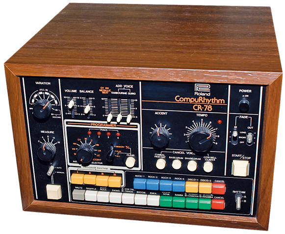
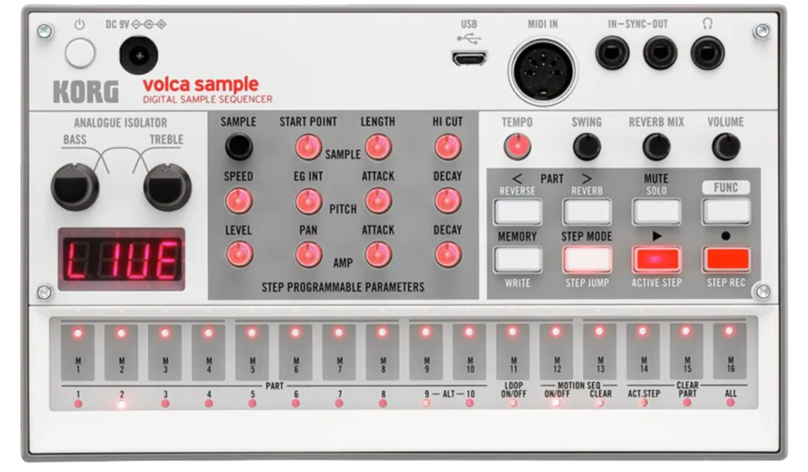
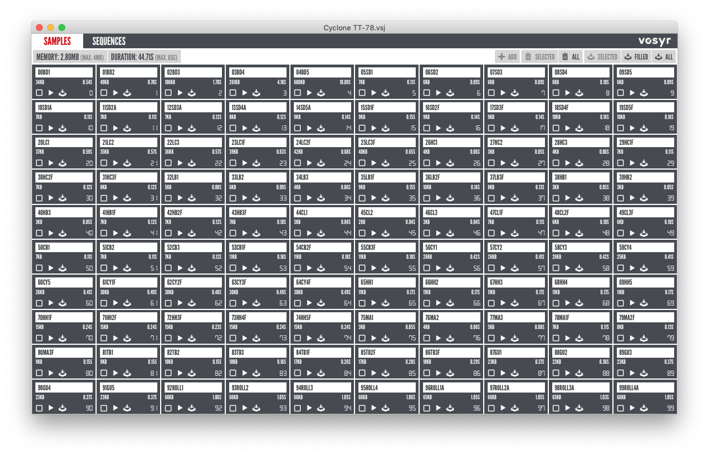
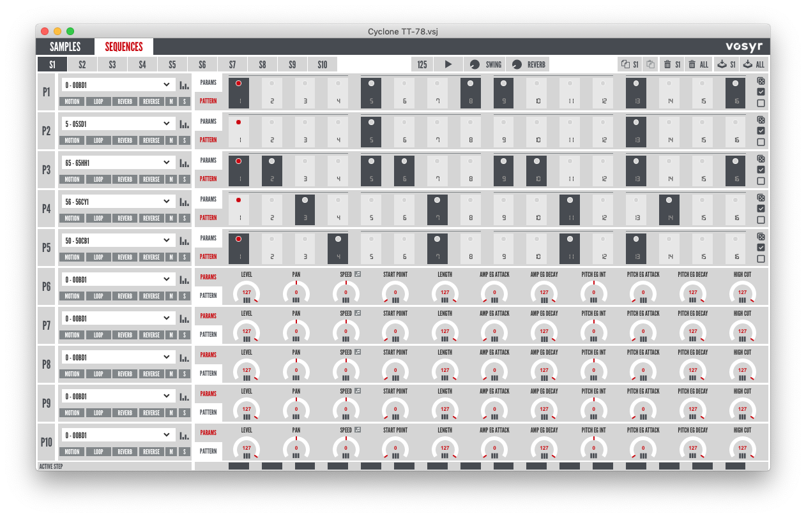

Cyclone TT-78 × Volca Sample
Recorded through warm preamps, the TT-78 vibe now lives in ready-to-load PNG banks. Each sample is labeled for fast selection and comes with both raw and tightly processed variants.
- Complete drum kit captured from the Cyclone Analogic TT-78 (CR-78 clone).
- Vosyr packs arranged for the Volca Sample, including mix-ready macro controls.
- Pattern folders export two curated scenes for performance-ready grooves.





Hear it move
Two-minute demo captured using the Volca Sample patched through the Vosyr interface (source footage above).